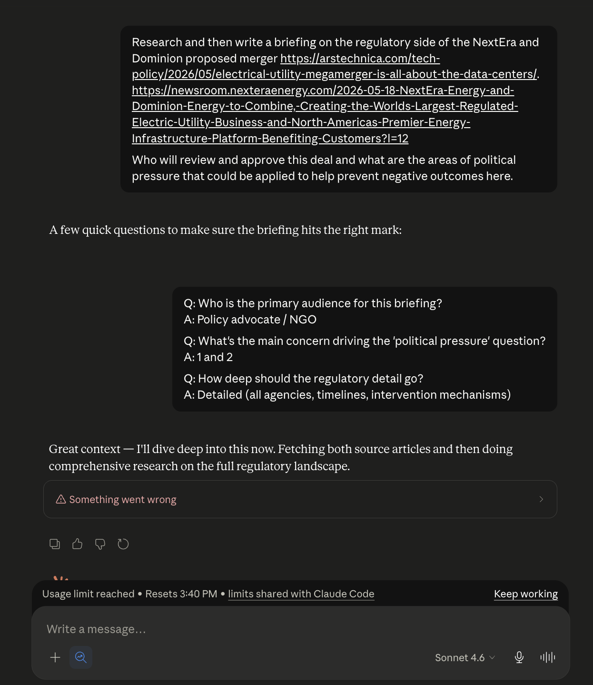
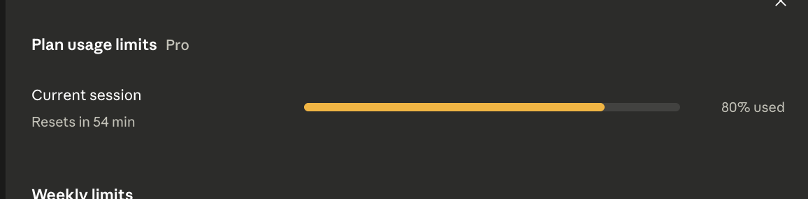
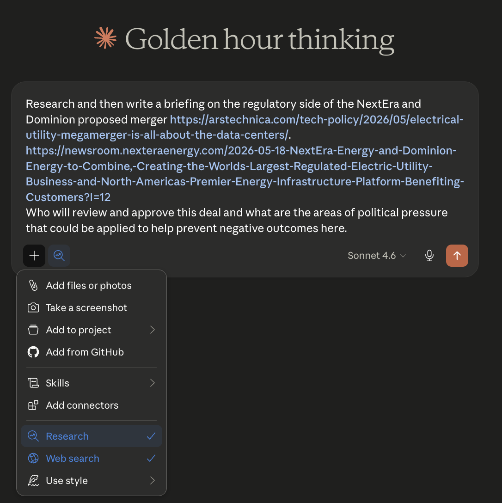

Claude.AI Pro Plan quotas too small for deep research
Published 2026-05-20

Usage limits are too small for deep research
The $20/month Claude pro plan gives me at most 1 successful research mode question per session before I hit the usage limits, and I have twice seen a single research question fail to finish because it burns the entire session usage. Even when using Sonnet.
My suggestions if anyone at Anthropic sees this: Add some kind of hint to Claude to wrap things up as usage starts coming to an end, add some kind of UI hint to just use web search more often, and maybe allow soft overages for session usage?
The setup:
Dominion Energy and next era energy announced they plan on doing a merger and will form the largest energy company in the United States. Having written a book about energy technology and energy policy, I have some opinions on this space and wanted to learn a little bit more. So I asked Claude to do some research into this. I specifically chose the sonnet 4.6 model because I had previously seen research mode on opus fully burn all the usage in my $20 per month pro plan.
A few minutes into this it exploded!
I had hit my limits before it could finish!
Well, 80% of my limits... Which is also weird because last time I checked even dumb local models will confirm that 80% is not 100%... There might be a bug?

Take 2.
So I tried again a few hours later with the same prompt. No other connectors, no excessive MCP servers or customizations to burn context. No other usage in that session.

It worked this time, but used 56% of my usage.
Just 236 sources with lots of fact checking and cross referencing. The average of the internet averaging this section of the internet.
Claude.AI feels less quota efficient than Claude Code?
Last week I had a similar experience where resuming a short Claude web session and asking for a little bit of spreadsheet modeling work with Opus 4.7 consumed a whole session of usage quota and failed before finishing. I suspect that Claude Code would have used significantly less quota for the same amount of actual work. The moral of the story is never resume a session and manage context ruthlessly.
Maybe the real moral of the story is that most tasks don't need deep research, but it's still surprising to feel so constrained to only have at most one research mode question per ~6 hours.
Conclusions
I'm increasingly coming to believe that features failing outright is a very bad user experience.
Agentic workflows should either reject tasks up front due to lack of projected budget, or degrade gracefully within their budget. Otherwise people won't trust the feature itself, let alone trust it to use as many tokens as it can get.